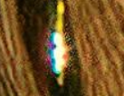

Opdracht 2
Als het bestand niet gecomprimeerd is heeft het een grootte van 4.5MB. Ik heb er een detail uitgekozen met veel kleuren, zodat het verschil duidelijk is.
Met de kwaliteit op 90 vermindert de bestandsgrootte niet en is er geen duidelijk verschil.

Kwaliteit op 70 zorgt voor een bestand van net geen 4MB, het verschil is niet groot, maar wel al zichtbaar.
De quality factor op 40 verkleint het bestand naar 2.2MB, met een duidelijk verschil in kwaliteit.